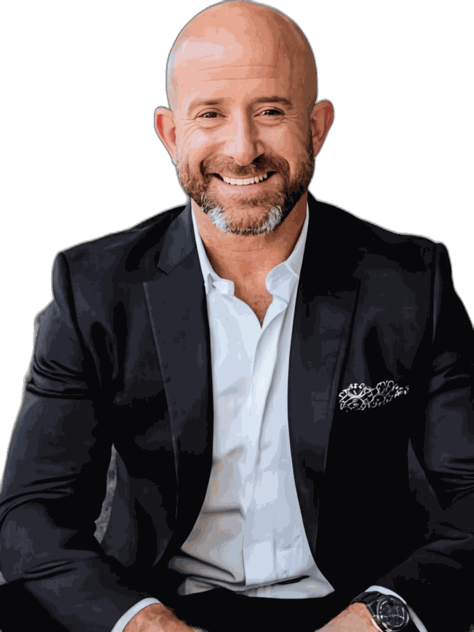

LOVORIAN
CONSULTING
CONSULTING
From AI-Uncertain to AI-Operational
I translate AI into plain English for small businesses.
If I don't think something will pay for itself, I'll tell you before we start.

Most AI consulting sells you more: more tools, more seats, a bigger roadmap, a longer contract. I started Lovorian to do the opposite — find what actually saves you time, saves you money, or grows your bottom line, one stage at a time.
Every week there’s a new tool, a new platform, a new thing you’re supposed to already be using. The business owners I meet don’t need another option — they need someone to translate the noise into three things that actually matter for their business, and ignore the rest.
“That’s the job. Not adding to the pile — cutting through it.”
I spent a decade in small-business IT support — not consulting from a distance, but in the weeds with owners, doing desktop and application support, general tech break/fix, and day-to-day IT management for small businesses. Later, I moved into enterprise IT with executives at a major financial institution, working inside the kind of structure and governance that a Fortune 500 name demands — real security rules, real accountability, real stakes.
What I kept seeing was the same story: a business owner gets pitched an expensive platform, spends months implementing it, and ends up with software their team quietly stops using. The problem was never that AI couldn’t help — it’s that the tools built for enterprise never made it down to the businesses that needed them most.
“That’s the belief Lovorian is built on: the same thinking that works for a major financial institution should be available to the small business down the street — just built to fit how they actually work.”
I didn’t build Lovorian as a menu of services. I built it as a sequence, because that’s how trust actually works between a business and the people touching its systems.
It starts with visibility — the lowest-risk place to start. Before I touch your internal data or workflows, I look at what’s already public: how customers and AI find you, or don’t. No system access required. You get a diagnosis, a roadmap, and the fix, before I’ve asked for anything more.
“Only once that trust is established does it make sense to go deeper — your data, your workflows, eventually a dashboard to keep it all in view. Each stage earns the next.”
See the Full Path →When you hire Lovorian, the person who audits your business is the same person who builds the roadmap and does the fix. No account manager, no junior handed your project, no committee. I keep my client list small on purpose, so the people I work with get my actual attention.
It also means I own the outcome. If something I set up isn’t working, that’s mine to fix — not something to escalate to a support queue.
When a stage needs specialized hands I don’t offer myself, I bring in an expert I trust — and I stay your single point of contact through all of it. What grows around your project is expertise, never a wall between us.
AI is only worth using if you can trust where your information goes. I won’t plug your business into a black box. Every tool I recommend, I can tell you exactly what it touches, where your data actually lives, and who else can reach it — before it goes anywhere near your systems. Security and governance aren’t an afterthought; they’re the reason I’m careful about what I recommend in the first place.
I’m based in Torrance and work across Southern California — happy to meet in person or work remotely, whichever fits how you run your business.
A free 30-minute call is usually enough to tell whether AI can actually help your business right now — and exactly where to start. No pitch, no obligation, just a straight answer.
Book a Free Consult